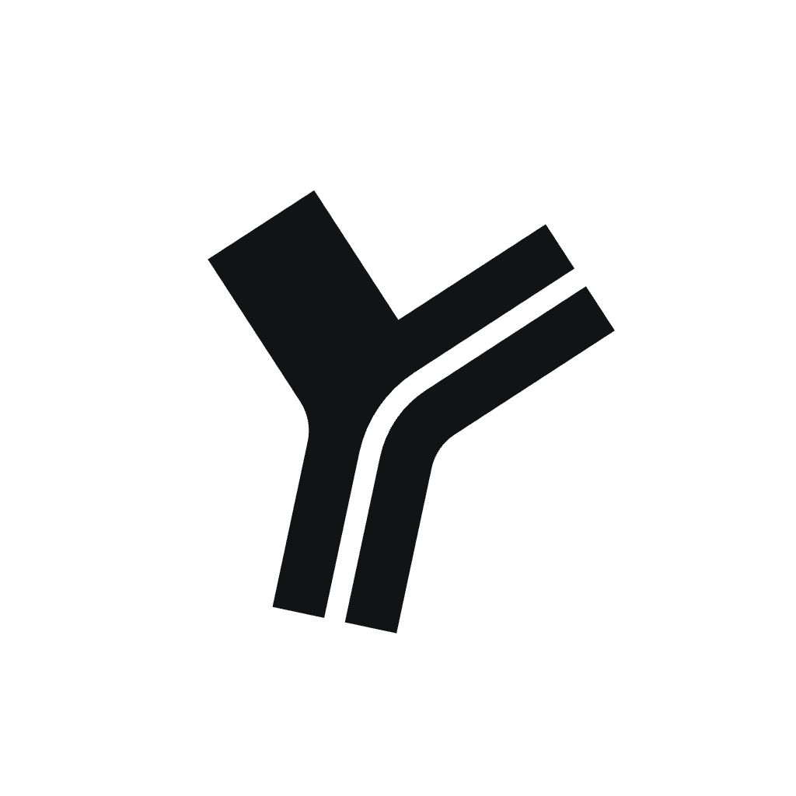

<!doctype html>
<html lang="zh"><meta charset="utf-8"><meta name="viewport" content="width=device-width,initial-scale=1">
<title>标志资产</title><style>
body{margin:0;padding:32px;background:#f5f5f3;color:#111315;font:14px/1.5 system-ui,sans-serif}
main{max-width:800px;margin:auto}section{display:flex;flex-wrap:wrap;gap:16px}figure{margin:0}
figure div{display:grid;place-items:center;width:180px;height:180px;background:#fff}
figure .dark{background:#111110}figure img{width:100%;height:100%}figcaption{margin-top:8px}
</style><main><h1>标志资产</h1><p>浅色底使用正形，深色底使用反白几何。</p><section>
<figure><div></div><figcaption>浅色</figcaption></figure>
<figure><div class="dark"></div><figcaption>深色</figcaption></figure>
<figure><div></div><figcaption>应用图标</figcaption></figure>
</section></main></html>
